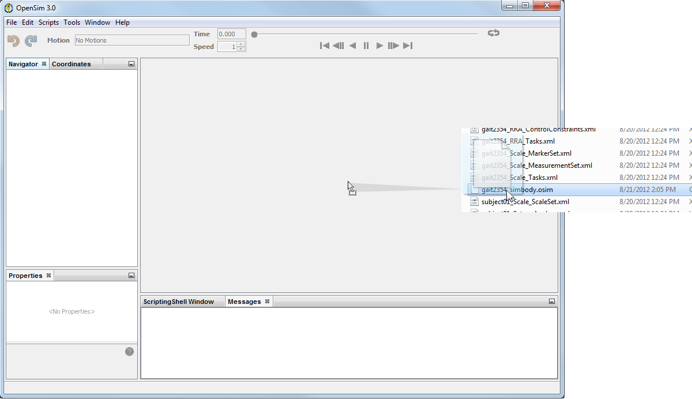
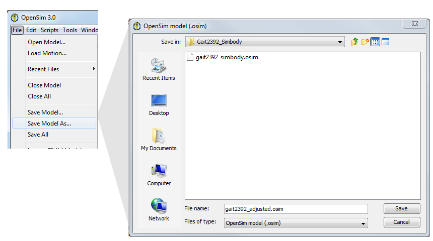

The sections below described how to:
Opening a Model
There are several ways to open a musculoskeletal model written in the OpenSim format (file type: .osim), described in the sections below:
From the File Menu
you could either drag the file from the Windows Explorer and drop it on the 3D window of the OpenSim application (if the application is already open) or you can use the File menu as described below.
|
OR If you want to open a model that you've loaded recently in the GUI, click File → Recent Files >. This will show a list of up to 10 most recently used models. |
|---|

Drag and Drop
|  | You can also open model files by dragging the file from the Windows Explorer and droping it on the 3D window of the OpenSim application (if the application is already open). |
|---|
Saving a Model
To save a copy of a model:
|  |
There are several ways to save a model.
|
|---|
To save a model to the file it came from use File → Save Model and OpenSim will save the current model in the application. You could also choose File → Save All to save all the models currently open in the application to disk.
Closing a Model
There are several ways to close a model:
- Right mouse click on the desired model and select Close.
- Navigate to the File menu and choose Close Model or Close All. Selecting Close Model will close the current model. Select Close All will close all loaded models.
- If you have made changes to the model, you'll be asked if you want to save or discard the changes.
{kind=link}
{kind=link}